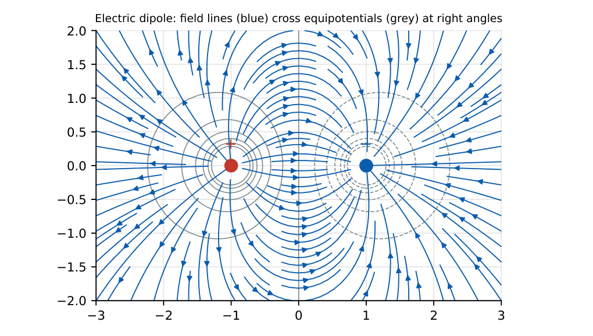

Electrostatics
In this chapter
Coulomb’s law, fields of standard charge distributions via Gauss’s law, potential and energy, boundary conditions at conductor and dielectric surfaces, and the capacitance of standard geometries. Most questions are one formula plus unit care.
2.1 Coulomb’s law and electric field
\(\mathbf F=\dfrac{Q_1Q_2}{4\pi\eps R^2}\ar_R\), \(\ \dfrac1{4\pi\epsz}=9\times10^9\ \mathrm{N\,m^2/C^2}\). Like charges repel.
Field \(\vE=\mathbf F/q=\dfrac{Q}{4\pi\eps R^2}\ar_R\) (V/m). Superposition applies. Flux density \(\vD=\eps\vE\) (C/m\({}^2\)), \(\eps=\eps_r\epsz\).
2.2 Gauss’s law and standard fields
\(\oiint_S\vD\cdot d\mathbf S=Q_{enc}\ \Leftrightarrow\ \grad\cdot\vD=\rho_v\). Choose a Gaussian surface on which \(\vD\) is constant and normal.
Point or sphere: \(E=\frac{Q}{4\pi\eps r^2}\) outside. Infinite line charge \(\rho_l\): \(E=\frac{\rho_l}{2\pi\eps\rho}\ar_\rho\). Infinite sheet \(\rho_s\): \(E=\frac{\rho_s}{2\eps}\). Conductor surface: \(E=\rho_s/\eps\) (normal). Inside a conductor (static) \(\vE=0\), the charge resides on the surface and the conductor is an equipotential.
An infinite line charge of \(10\,\)nC/m: \(E(2\,\mathrm m)=\dfrac{\rho_l}{2\pi\epsz\rho}=\dfrac{10\times10^{-9}}{2\pi(8.854\times10^{-12})(2)}\approx89.9\) V/m.
2.3 Electric potential, energy
\(\vE=-\grad V\), \(\ V_{AB}=-\int_B^A\vE\cdot d\mathbf l\), \(\ \oint\vE\cdot d\mathbf l=0\) (conservative). Point charge: \(V=\frac{Q}{4\pi\eps r}\) (reference at infinity). Dipole: \(V=\frac{p\cos\theta}{4\pi\eps r^2}\), \(p=Qd\).
Poisson: \(\grad^2V=-\rho_v/\eps\); Laplace: \(\grad^2V=0\) (no charge). Solutions of Laplace’s equation are unique given boundary conditions.
Energy: \(W=\tfrac12\iiint\rho_vV\,dV=\tfrac12\iiint\vD\cdot\vE\,dV\); energy density \(w_e=\tfrac12\eps E^2\).

A shell of radius \(a\) carrying \(Q\) has \(V=\frac{Q}{4\pi\eps a}\) everywhere on and inside it; for \(Q=10\) nC and \(a=0.1\,\)m this is \(900\) V.
2.4 Boundary conditions
Tangential \(\vE\) is continuous: \(E_{1t}=E_{2t}\) (\(\Leftrightarrow D_{1t}/\eps_1=D_{2t}/\eps_2\)).
Normal \(\vD\): \(D_{1n}-D_{2n}=\rho_s\) (free surface charge); with \(\rho_s=0\), \(D_{1n}=D_{2n}\), i.e. \(\eps_1E_{1n}=\eps_2E_{2n}\).
Conductor–dielectric: \(E_t=0\), \(D_n=\rho_s\). Refraction: \(\dfrac{\tan\theta_1}{\tan\theta_2}=\dfrac{\eps_1}{\eps_2}\) (\(\theta\) measured from the normal).
If \(E_{1}=10\) V/m is normal to the interface of \(\eps_r=2\) and \(\eps_r=5\) dielectrics, the field in medium 2 is \(E_2=10\cdot\frac25=4\) V/m.
2.5 Capacitance
Parallel plate: \(C=\dfrac{\eps A}{d}\). Coaxial (length \(L\)): \(C=\dfrac{2\pi\eps L}{\ln(b/a)}\). Concentric spheres: \(C=\dfrac{4\pi\eps ab}{b-a}\). Isolated sphere: \(C=4\pi\eps a\).
Parallel combination \(C=C_1+C_2\); series \(\frac1C=\frac1{C_1}+\frac1{C_2}\). Energy \(W=\tfrac12CV^2=\tfrac12QV\).
Dielectric slab filling part of a gap: the layers act as capacitors in series (slab perpendicular to \(\vE\)) or parallel (slab parallel to \(\vE\)).
Plates of area \(100\,\mathrm{cm^2}\), spacing \(1\,\)mm, air: \(C=\dfrac{8.854\times10^{-12}\times10^{-2}}{10^{-3}}=88.5\) pF. With a coaxial line of \(b/a=e\) and \(\eps_r=2.25\): \(C'=2\pi\eps=2\pi(2.25)(8.854\times10^{-12})=125.2\) pF/m.
(i) \(E=\rho_s/(2\eps)\) for a sheet but \(\rho_s/\eps\) at a conductor surface. (ii) The field inside a conductor is zero, but outside it is not. (iii) Normal \(\vD\) (not \(\vE\)) is continuous when \(\rho_s=0\). (iv) Capacitance depends on geometry and \(\eps\) only, not on \(Q\) or \(V\).
\(C\propto A/d\): double \(d\to\) half \(C\). For stored energy use \(\frac12CV^2\) (\(V\) fixed) or \(\frac{Q^2}{2C}\) (\(Q\) fixed). Potential of a point charge in air: \(V\approx9\times10^9Q/r\). For interface problems write \(\eps_1E_{1n}=\eps_2E_{2n}\) first.
2.6 GATE problems
Q1. The force between \(1\,\mu\)C and \(2\,\mu\)C at \(10\,\)cm in air is (A) 0.18 N (B) 1.8 N (C) 18 N (D) 0.018 N.
Q2. Inside a conductor under electrostatic conditions the electric field is (A) uniform non-zero (B) zero (C) radial (D) infinite.
Q3. Doubling the plate spacing of a parallel-plate capacitor (A) doubles \(C\) (B) halves \(C\) (C) quadruples \(C\) (D) leaves \(C\) unchanged.
Q4. The potential of a point charge \(Q\) at distance \(r\) is (A) \(\frac{Q}{4\pi\epsz r^2}\) (B) \(\frac{Q}{4\pi\epsz r}\) (C) \(\frac{Q}{2\pi\epsz r}\) (D) \(\frac{Qr}{4\pi\epsz}\).
Answers: Q1 (B): \(9\times10^9\cdot2\times10^{-12}/0.01=1.8\). Q2 (B). Q3 (B). Q4 (B).
Q5. An infinite line charge of \(10\,\)nC/m. \(E\) at \(2\,\)m is (A) 9 V/m (B) 45 V/m (C) 90 V/m (D) 180 V/m.
Q6. A conducting sphere of radius \(0.1\,\)m carries \(10\,\)nC. Its potential is (A) 90 V (B) 900 V (C) 9000 V (D) 9 V.
Q7. \(E=10\) V/m normal to an interface between \(\eps_r=2\) (medium 1) and \(\eps_r=5\) (medium 2), no surface charge. \(E_2=\) (A) 25 V/m (B) 4 V/m (C) 10 V/m (D) 2 V/m.
Answers: Q5 (C): \(89.9\). Q6 (B). Q7 (B): \(2\cdot10=5E_2\).
Q8. Capacitance (pF) of air plates of \(100\,\mathrm{cm^2}\) at \(1\,\)mm: .
Q9. Energy (mJ) in a \(10\,\mu\)F capacitor charged to \(100\,\)V: .
Q10. Capacitance per metre (pF/m) of a coaxial line with \(b/a=e\), \(\eps_r=2.25\): .
Answers: Q8: \(88.5\). Q9: \(\frac12(10^{-5})(10^4)=0.05\) J \(=50\) mJ. Q10: \(125.2\).
Q11. For an electrostatic field: (A) \(\grad\times\vE=0\) (B) \(\grad\cdot\vD=\rho_v\) (C) \(\vE=-\grad V\) (D) \(\grad\cdot\vE=0\) everywhere.
Answers: Q11: (A), (B), (C).
T1. Field of an infinite sheet? T2. Boundary condition on tangential \(\vE\)? T3. \(C\) of an isolated sphere?
Answers: T1: \(\rho_s/2\eps\). T2: continuous. T3: \(4\pi\eps a\).
- \(\vE=\frac{Q}{4\pi\eps r^2}\), \(V=\frac{Q}{4\pi\eps r}\), \(\vE=-\grad V\); line \(\frac{\rho_l}{2\pi\eps\rho}\), sheet \(\frac{\rho_s}{2\eps}\).
- Gauss: \(\oiint\vD\cdot d\mathbf S=Q_{enc}\); conductor: \(E_{in}=0\), \(D_n=\rho_s\).
- Boundary: \(E_t\) continuous; \(D_n\) continuous if \(\rho_s=0\).
- \(C=\eps A/d\), coax \(\frac{2\pi\eps L}{\ln(b/a)}\), sphere \(4\pi\eps a\); \(W=\frac12CV^2\); \(w_e=\frac12\eps E^2\).